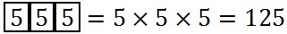
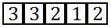
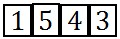

Analysis Report
Engineering + Biology Double Course (NEW) 2020
Engineering Standard Weekly MCQ and Written Live Exam-01
Highest Marks: 184/210
MCQ
Mathematics (10)
1,2,3,4,5 অংকগুলোর প্রত্যেকটিকে যেকোন সংখ্যক বার নিয়ে গঠিত তিন অংকবিশিষ্ট সংখ্যা -
যেকোন সংখ্যক বার নিয়ে গঠিত তিন অংক বিশিষ্ট সংখ্যা: 
এক ব্যক্তির 12 জন বন্ধু আছে যাদের মধ্যে 8 জন আত্মীয়। তিনি কত প্রকারে 7 জন বন্ধুকে নিমন্ত্রণ করতে পারেন যাদের মধ্যে 5 জন আত্মীয় থাকবেন?
আত্মীয় = 8 জন
সাধারণ বন্ধু = জন
নিমন্ত্রণ করতে পারবেন
যদি হয়, তবে এর মান কোনটি?
0,2,3,5,6 কে একবার মাত্র ব্যবহার করে পাঁচ অংকবিশিষ্ট অর্থপূর্ণ বিজোড় সংখ্যা গঠন করা যায় -
পাঁচ অংক বিশিষ্ট অর্থপূর্ণ বিজোড় সংখ্যার ক্ষেত্রে : 
যেহেতু বিজোড় তাই শেষ অংকটি 3 বা 5 হবে।
2 ভাবে হতে পারে প্রথম ঘরে 0 বসবে না।
অর্থপূর্ণ বিজোড় সংখ্যা,
1,2,3,5,6,7 অংকগুলো একবার মাত্র ব্যবহার করে 5000 ও 6000 এর মধ্যবর্তী সংখ্যা গঠন করা যায়-
সংখ্যাটি 4 অংক বিশিষ্ট এবং ১ম অংকটি অবশ্যই 5 হতে হবে।
সংখ্যা গঠন করা যায়-  টি
1,2,3,4,5,6,7 সে.মি দৈর্ঘ্যবিশিষ্ট রেখা দ্বারা চতুর্ভূজ গঠন করা যায় -
নির্ণেয় চতুর্ভূজ সংখ্যা: এই বাহুগুলো নিয়ে চতুর্ভূজ গঠিত হয় না।
12 টি বাহু বিশিষ্ট একটি বহুভূজের কর্ণের সংখ্যা-
‘Equation’ শব্দটির অক্ষরগুলোকে কতভাবে সাজানো যায়?
8 টি অক্ষরই ভিন্ন ভিন্ন সুতরাং উপায়
শব্দটির বর্ণগুলি থেকে প্রত্যেকবার চারটি করে বর্ণ নিয়ে গঠিত শব্দ সংখ্যা কোনটি?
শব্দটিতে 1 টি a, 2 টি d, 2টি r, 2 টি s, তিনটি e রয়েছে।
(i) 3 টি e, 1 টি ভিন্নঃ
টি একজাতীয়, 2 টি আরেক জাতীয়ঃ
টি একজাতীয়, 2 টি ভিন্নঃ
সবকটি ভিন্নঃ
মোট শব্দসংখ্যা টি 
স্বরবর্ণগুলিকে একত্রে পাশাপাশি না রেখে শব্দটির অক্ষরগুলি কত সংখ্যক উপায়ে সাজানো যাবে?
স্বরবর্ণ
স্বরবর্ণগুলোকে একটি শব্দ বিবেচনা করলে মোট সাজানো সংখ্যা
স্বরবর্ণগুলোকে একত্রে রেখে মোট বিন্যাস
নির্ণেয় বিন্যাস সংখ্যা
Physics (10)
হলে
ভেক্টরটির সদৃশ ভেক্টর নিচের কোনটি?
সম্প্রতি আবিষ্কৃত একটি গ্রহের অভিকর্ষজ ত্বরণ , যা উল্লম্বের সাথে কোণে ক্রিয়াশীল। উল্লম্ব বরাবর অভিকর্ষজ ত্বরণের উপাংশ-
হলে নিচের কোনটির জন্য ভেক্টরটির ঘনত্ব ধ্রুব থাকে?
সলিনয়ডাল হলে ঘনত্ব ধ্রুব থাকে।
দুইটি বলের লব্ধির মান 40N। বল দুইটির মধ্যে ছোট বলটির মান 30N এবং এটি লব্ধি বলের লম্ব বরাবর ক্রিয়া করে। বড় বলটির মান কত?
![]()
পীথাগোরাসের উপপাদ্য অনুসারে,
একজন সাঁতারু স্রোতের বেগের n গুণ বেগ নিয়ে যাত্রা শুরু করে স্রোতের সাথে কোণ উৎপন্ন করে। যাত্রা পথের ঠিক বিপরীত বিন্দুতে পৌঁছালে n এর মান কত?
এর তে কত?
ও হলে ও উভয়ের উপর লম্ব একক ভেক্টর কোনটি?
একক ভেক্টরটি হল এর দিকে একক ভেক্টর।
And that is
![]()
কর্ণদ্বয় হলে
![]()
বায়ু দক্ষিণ-পশ্চিম দিকে প্রবাহিত হচ্ছে যেখানে বায়ুর দক্ষিণমুখী উপাংশ পশ্চিমমুখী উপাংশের দ্বিগুণ। দক্ষিণ দিকের সাথে বায়ু প্রবাহ কত কোণ উৎপন্ন করে?
![]()
Chemistry (10)
এর ইলেকট্রন বিন্যাস–
প্রতিরূপী মৌলসমূহ কোন ব্লকে বিদ্যমান?
আয়নিক ব্যাসার্ধের সঠিক ক্রম কোনটি?
নিচের হ্যালোজেনগুলির মধ্যে কোনটির ইলেকট্রন আসক্তি সর্বাধিক?
নিচের কোনটি উভধর্মী?
N এর ১ম আয়নীকরণ শক্তি O এর ১ম আয়নীকরণ শক্তির চেয়ে বেশি কেন?
তড়িৎ ঋণাত্মকতার ক্ষেত্রে কোনটি প্রযোজ্য?
নিচের কোনটি?
নিচের কোনটি ডায়াম্যাগনেটিক নয়?
ধাতুকে চুম্বকে পরিণত করে। ফেরোম্যাগনেটিক
কোনটি অবস্থান্তর ধাতুর বৈশিষ্ট্য নয়?
Written
Mathematics (5)
0,2,3,5,6 কে একবার মাত্র ব্যবহার করে পাঁচ অংকবিশিষ্ট কতগুলো অর্থপূর্ণ বিজোড় সংখ্যা গঠন করা যায় ?
পাঁচ অংক বিশিষ্ট অর্থপূর্ণ বিজোড় সংখ্যার ক্ষেত্রে : যেহেতু বিজোড় তাই শেষ অংকটি 3 বা 5 হবে।
2 ভাবে হতে পারে এবং প্রথম ঘরে 0 বসবে না।
অর্থপূর্ণ বিজোড় সংখ্যা,
নম্বর বণ্টনঃ
অর্থপূর্ণ বিজোড় সংখ্যা, ১০নম্বর।
বিকল্প সমাধানঃ
যেহেতু বিজোড় তাই শেষ অঙ্কটি 3 বা 5 হবে।
শেষ অঙ্কটি 3 এর জন্যঃ
![]() বিজোড় সংখ্যা গঠন
বিজোড় সংখ্যা গঠন
![]() বিজোড় সংখ্যা গঠন
বিজোড় সংখ্যা গঠন
প্রথম ঘরে 0 হলে অর্থপূর্ণ সংখ্যা গঠন হয় না।
অর্থপূর্ণ বিজোড় সংখ্যা গঠন
শেষ অঙ্কটি 5 এর জন্যঃ
![]() বিজোড় সংখ্যা গঠন
বিজোড় সংখ্যা গঠন
![]() বিজোড় সংখ্যা গঠন
বিজোড় সংখ্যা গঠন
প্রথম ঘরে 0 হলে অর্থপূর্ণ সংখ্যা গঠন হয় না।
অর্থপূর্ণ বিজোড় সংখ্যা গঠন
মোট অর্থপূর্ণ বিজোড় সংখ্যা
বিকল্প সমাধানের নম্বর বণ্টনঃ
শেষ অঙ্কটি 3 এর জন্য অর্থপূর্ণ বিজোড় সংখ্যা গঠন ০৩ নম্বর।
শেষ অঙ্কটি 5 এর জন্য অর্থপূর্ণ বিজোড় সংখ্যা গঠন ০৩ নম্বর।
যোগ করে মোট অর্থপূর্ণ বিজোড় সংখ্যা গঠন ০৪ নম্বর ।
6 জন ছাত্র এবং 5 জন ছাত্রী থেকে 5 জনের একটি কমিটি করতে হবে যাতে অন্তত একজন ছাত্র ও একজন ছাত্রী অন্তর্ভূক্ত থাকে। কত প্রকারে এ কমিটি করা যেতে পারে?
![]()
নম্বর বণ্টনঃ
নির্ণয়ের জন্য ০২ নম্বর।
নির্ণয়ের জন্য ০২ নম্বর।
নির্ণয়ের জন্য ০২ নম্বর।
নির্ণয়ের জন্য ০২ নম্বর।
নির্ণয়ের জন্য ০২ নম্বর।
বিকল্প সমাধান:
কোন ছাত্র নেই এরুপ কমিটির সংখ্যা
কোন ছাত্রী নেই এরুপ কমিটির সংখ্যা
কোন ছাত্র বা ছাত্রী নেই এরুপ কমিটির সংখ্যা = 0
মোট কমিটির সংখ্যা
কমপক্ষে 1 জন ছাত্র ও 1 জন ছাত্রী আছে এরুপ কমিটির সংখ্যা
বিকল্প নম্বর বণ্টনঃ
কোন ছাত্র নেই এরুপ কমিটির সংখ্যা নির্ণয়ের জন্য ০১ নম্বর।
কোন ছাত্রী নেই এরুপ কমিটির সংখ্যা নির্ণয়ের জন্য ০১ নম্বর।
কোন ছাত্র বা ছাত্রী নেই এরুপ কমিটির সংখ্যা নির্ণয়ের জন্য ০১ নম্বর।
মোট কমিটির সংখ্যা নির্ণযের জন্য ০১ নম্বর।
কমপক্ষে 1 জন ছাত্র ও 1 জন ছাত্রী আছে এরুপ কমিটির সংখ্যা নির্ণয়ের জন্য ০৬ নম্বর।
একটি সংকেত তৈরি করতে তিনটি পতাকার প্রয়োজন হয়। ছয়টি ভিন্ন রং-এর প্রত্যেকটির 4টি করে 24টি পতাকা দ্বারা কতগুলো সংকেত দেয়া যেতে পারে?
Case-1: সবগুলি পতাকা ভিন্ন রংয়ের। এক্ষেত্রে মোট সংকেত সংখ্যা
Case-2: দুটি পতাকা একই রংয়ের এবং অপরটি ভিন্ন। একটি রংয়ের দুটি পতাকা বাছাই করা যায় উপায়ে।
অন্য একটি রংয়ের একটি পতাকা বাছাই করা যায় উপায়ে।
মোট সাজানো সংখ্যা
Case-3: তিনটি পতাকা একই রংয়ের। যেকোনো একটি রংয়ের তিনটি পতাকা বাছাই করা যায় উপায়ে।
এই তিনটি পতাকা সাজানো যায় উপায়ে।
মোট সাজানো সংখ্যা
মোট সংকেত তৈরি করা যাবে টি (Ans.)
নম্বর বণ্টনঃ
Case-1 এর ক্ষেত্রে, মোট সংকেত সংখ্যা ০১ নম্বর।
Case-2 এর ক্ষেত্রে, মোট সাজানো সংখ্যা ০১ নম্বর।
Case-3 এর ক্ষেত্রে, মোট সাজানো সংখ্যা ০১ নম্বর।
মোট সংকেত তৈরি করা যাবে = 216 টি নির্ণয়ের জন্য ০৭ নম্বর।
এবং হলে, এর কতগুলো সমাধান আছে?
- এর সমাধান সংখ্যা
এর সমাধান সংখ্যা
নম্বর বণ্টনঃ
নির্ণয়ের জন্য ০২ নম্বর।
এর সমাধান সংখ্যা নির্ণয়ের জন্য ০৪ নম্বর।
এর সমাধান সংখ্যা নির্ণয়ের জন্য ০৪ নম্বর।
100 থেকে 999 সংখ্যাগুলোর মধ্যে যেসব সংখ্যায় 1 টি জোড় ও 2 টি বিজোড় অংক আছে তাদের মোট সংখ্যা কত? [0 কে জোড় বা বিজোড় বিবেচনা করা হচ্ছে না।]
প্রথম অংক 1 থেকে 9 এর মাঝে একটি হবে। আবার, অন্যান্য অংকগুলোতেও 0 থাকবে না।
Case-1: টি জোড় এবং টি আলাদা বিজোড় অংক হলে,
Case-2: টি জোড় এবং টি একই বিজোড় সংখ্যা হলে,
মোট সংখ্যা টি
নম্বর বণ্টনঃ
Case-1 এর ক্ষেত্রে, 1টি জোড় এবং 2টি আলাদা বিজোড় অঙ্ক হলে, ০২ নম্বর।
Case-2 এর ক্ষেত্রে, 1টি জোড় এবং 2টি আলাদা বিজোড় অঙ্ক হলে, ০২ নম্বর।
যোগ করে মোট সংখ্যা নির্ণয়ের জন্য ০৬ নম্বর।
Physics (5)
![]()
বাহ্যিক বাতাসের উপস্থিতিতে উলম্বের সাথে কত কোণে ছাতা ধরলে বৃষ্টি হতে বাঁচা যাবে? চিত্রে ছাতা ধরার দিকটি দেখাও।
![]()
নম্বর বণ্টনঃ
নির্ণয়ের জন্য ০৪ নম্বর।
নির্ণয়ের জন্য ০৬ নম্বর।
![]()
নদীটি পার হবার সর্বনিম্ন পথের দৈর্ঘ্য কত?
তাই নদীটি সোজাসুজি পার হওয়া যাবে না।
ধরি, স্রোতের সাথে কোণে যাত্রা শুরু করলে আনুভূমিক দূরত্ব সর্বনিম্ন হয়।
![]()
সর্বনিম্ন পথ
নম্বর বণ্টনঃ
লেখার জন্য ০১ নম্বর।
সূত্র বসানোর জন্য ০১ নম্বর।
নির্ণয়ের জন্য ০২ নম্বর।
এর মান নির্ণয়ের জন্য ০২ নম্বর।
নির্ণয়ের জন্য ০২ নম্বর।
সর্বনিম্ন পথ নির্ণয়ের জন্য ০২ নম্বর।
![]()
2 km প্রস্থ বিশিষ্ট একটি নদীতে OA এর দিক বরাবর বেগে স্রোত বয়ে চলেছে। এমন অবস্থায় একটি স্পিডবোট OB এর দিক বরাবর স্থির অবস্থা থেকে সমত্বরণে চলতে শুরু করল। যখন নৌকাটি অপর পাড়ে পৌছাঁবে তখন x অক্ষ বরাবর নৌকাটির সরণ কত হবে?
দেয়া আছে, স্পিডবোটের আদি বেগ ত্বরণ,
x অক্ষের সাথে স্পিডবোটের বেগের দিক
স্রোতের বেগ,
x অক্ষের সাথে স্রোতের বেগের দিক
অক্ষ বরাবর সরণ
অপর পাড়ে পৌছাঁবার ক্ষেত্রে,
অপর ঋণাত্মক মান গ্রহণযোগ্য হবে না।
অক্ষ বরাবর সরণ
বসিয়ে পাই, x অক্ষ বরাবর সরণ
নম্বর বণ্টনঃ
y অক্ষ বরাবর সরণ লেখার জন্য ০২ নম্বর।
এর মান সঠিকভাবে বসিয়ে t এর মান নির্ণয়ের জন্য ০৪ নম্বর।
x অক্ষ বরাবর সরণ লেখার জন্য ০২ নম্বর।
t এর মান বসিয়ে x অক্ষ বরাবর সরণ নির্ণয়ের জন্য ০২ নম্বর।
এবং হলে ভেক্টরের লম্বদিকে ভেক্টরের উপাংশ কত?
![]()
নম্বর বণ্টনঃ
নির্ণয়ের জন্য ০৩ নম্বর।
লেখার জন্য ০১ নম্বর।
সঠিকভাবে ক্যালকুলেশন করে নির্ণয়ের জন্য ০৬ নম্বর।
p ও q এর মান কত হলে ভেক্টরটি অঘূর্ণনশীল হবে?
অঘূর্ণনশীল হবে যদি
হলে,
নম্বর বণ্টনঃ
লেখার জন্য ০২ নম্বর।
নির্ণায়কের মাধ্যমে সমাধান করে p এর মান নির্ণয়ের জন্য ০৪ নম্বর।
q এর মান নির্ণয়ের জন্য ০৪ নম্বর।
Chemistry (5)
অবস্থান্তর ধাতুসমূহের অন্তবর্তী যৌগ গঠন প্রক্রিয়ায় প্রভাবন ক্রিয়া ব্যাখ্যা কর:
বিভিন্ন অবস্থান্তর ধাতু অন্তবর্তী যৌগ গঠনের মাধ্যমে প্রভাবন ক্রিয়া প্রদর্শন করে। যেমন- স্পর্শ পদ্ধতিতে উৎপাদনকালে গ্যাসের জারণ ক্রিয়ায় প্রভাবন ক্রিয়া প্রদর্শন করে।
এক্ষেত্রে প্রভাবক ভিন্ন ভিন্ন জারণ অবস্থায় রূপান্তরিত হয় এবং পরে পূর্বের জারণ অবস্থায় ফিরে যায়। ফলে সক্রিয়ন শক্তি হ্রাস পেয়ে বিক্রিয়ার গতি বৃদ্ধি পায়। এক্ষেত্রে জারণ অবস্থা থেকে এ পরিণত হয়, শেষে এর সাথে বিক্রিয়ায় জারণ অবস্থায় ফিরে আসে।
নম্বর বণ্টনঃ
০৩ নম্বর।
০৩ নম্বর।
“এক্ষেত্রে জারণ অবস্থা থেকে এ পরিণত হয়” উল্লেখ করার জন্য ০২ নম্বর।
“শেষে এর সাথে বিক্রিয়ার জারণ অবস্থায় ফিরে আসে” উল্লেখ করার জন্য ০২ নম্বর।
[বি.দ্রঃ “যেকোনো অবস্থান্তর ধাতুর প্রভাবন ক্রিয়া ব্যাখ্যা গ্রহণযোগ্য হবে”।
(a) গলনাঙ্কের নিম্নতর ক্রমানুসারে সাজাও:
(b) আয়নীকরণ বিভবের ক্রমানুসারে সাজাও:
(c) ইলেকট্রন আসক্তির ক্রমানুসারে সাজাও: 0
নম্বর বণ্টনঃ
গলনাঙ্কের নিম্নতর ক্রমানুসারে সাজানোর জন্য ০৪ নম্বর।
আয়নীকরণ বিভবের ক্রমানুসারে সাজানোর জন্য ০৩ নম্বর।
ইলেকট্রন আসক্তির ক্রমানুসারে সাজানোর জন্য ০৩ নম্বর।
ও এর পরমাণু বা ধাতব লবণ বুনসেন শিখায় বর্ণ সৃষ্টি করে না কেন?
এদের আকার তুলনামূলকভাবে ছোট হওয়ায় এদের আয়নীকরণ শক্তি অন্যান্য s ব্লক মৌল অপেক্ষা বেশি হয়। যার কারনে নিউক্লিয়াস দ্বারা যোজ্যতা ইলেকট্রন অধিক আকৃষ্ট হয়। ফলে বুনসেন শিখার তাপে এসব মৌলের যোজ্যতাস্তরের ইলেকট্রন উদ্দীপিত হয়ে উচ্চতর শক্তিস্তরে উন্নীত হতে পারে না। তাই এরা শিখায় বর্ণ সৃষ্টি করে না।
নম্বর বণ্টনঃ
এর বিন্যাসের জন্য ০২ নম্বর।
এর বিন্যাসের জন্য ০২ নম্বর।
“আকার ছোট” উল্লেখ করার জন্য ০২ নম্বর।
‘আয়নীকরণ শক্তি অন্যান্য S ব্লক মৌল অপেক্ষা বেশি’ উল্লেখ করার জন্য ০২ নম্বর।
‘বুনসেন শিখার তাপে এসব মৌলের যোজ্যতাস্তরের ইলেকট্রন উদ্দীপিত হয়ে উচ্চতর শক্তিস্তরে উন্নীত হতে পারে না।যেকোনভাবে বুঝিয়ে লেখার জন্য ০২ নম্বর।
ইলেকট্রন বিন্যাস লিখ:
নম্বর বণ্টনঃ
প্রতিটি মৌলে বিন্যাসের জন্য ০২ নম্বর।
৫টি মৌলের বিন্যাসের জন্য ০৫ × ২ = ১০ নম্বর।
বিক্রিয়াগুলো সম্পূূর্ণ কর:
নম্বর বণ্টনঃ
প্রতিটি বিক্রিয়ার জন্য ০২ নম্বর।
৫টি সম্পূর্ণ বিক্রিয়ার জন্য ০৫ × ২ = ১০ নম্বর।